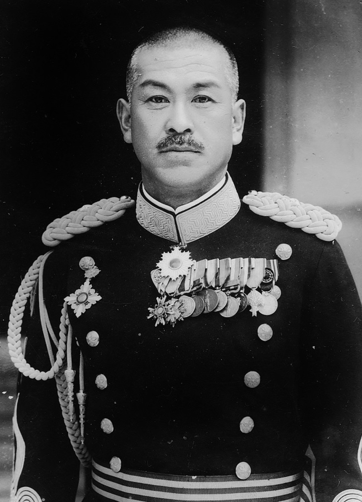

Nom : Mitsuru Ushijima
Dates : 31 juillet 1887 – 22 juin 1945
Nationalité : Japonaise
Mitsuru Ushijima est un général de l’armée impériale japonaise, connu pour avoir dirigé la défense d’Okinawa, dernière grande bataille terrestre du Pacifique. Officier calme, discipliné et respecté, il est considéré comme l’un des derniers grands commandants japonais de la Seconde Guerre mondiale.
En 1945, Ushijima reçoit la mission de défendre Okinawa contre l’invasion américaine. Conscient de l’écrasante supériorité ennemie, il adopte une stratégie défensive méthodique : positions enterrées, lignes successives, bunkers, résistance prolongée.
Contrairement à certains officiers japonais, il s’oppose aux attaques suicides inutiles et privilégie une défense organisée, destinée à retarder l’avancée américaine et à minimiser les pertes de ses hommes.
Ushijima est étudié comme un commandant sérieux et méthodique, capable de résister longtemps malgré une situation désespérée. Sa défense d’Okinawa a influencé les décisions américaines concernant l’invasion du Japon. Sa mort symbolise la fin des grandes batailles terrestres du Pacifique.